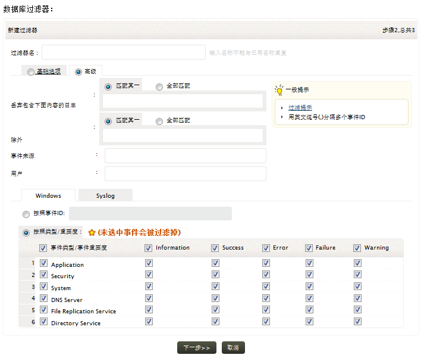
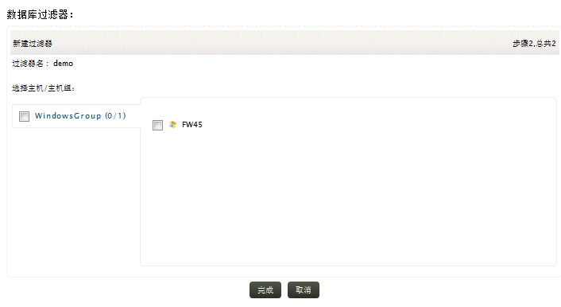
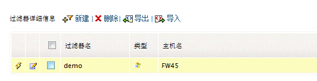
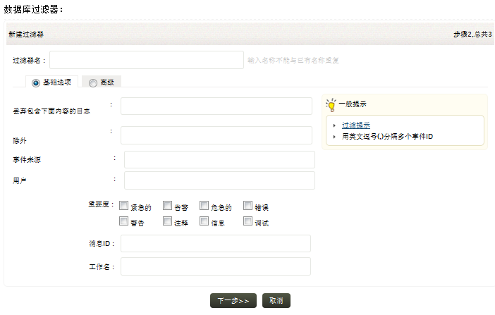
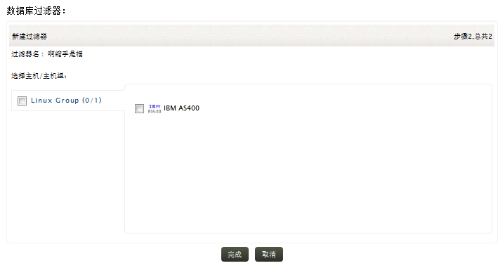

数据库过滤器
要排除不必要的或不想要的日志数据存储到EventLog Analyzer数据库，那么您需要配置数据库过滤器来实现这个处理工作，这样可以减少繁杂的日志，使必要日志的处理更高效。
创建数据库过滤器
要创建日志数据库过滤器，可通过以下菜单实现：
- 标签： +添加 > 过滤
- 设置页签 > 数据库过滤 >
添加
要创建一个数据库过滤器，请参阅以下步骤：
在下面的页面中，选择事件过滤选项，设置过滤参数，以及Windows事件ID、事件类型和重要度。

-
输入数据库过滤器的名称。
-
选择基础选项或高级选项来设置事件过滤。在基础选项下，基本的匹配条件包括，日志消息包括和除外过滤条件。在高级选项下，可以选择匹配其一或匹配全部的日志消息包括和除外过滤条件。
-
设置过滤条件，日志消息包括 – 使用这个选项可以过滤包含指定词组或短语的日志。
-
除外 - 使用这个选项可以排除包含指定词组或短语的日志。
-
事件来源 - 使用这个选项可以过滤指定事件来源的日志。
-
用户 - 使用这个可以过滤指定用户的日志。
-
选择过滤Windows或Syslog。
-
输入要过滤日志的事件ID。
-
选择过滤日志的类型/重要度。
点击下一步 > > 按钮

-
选择要关联日志过滤的主机组或主机。
-
点击完成来结束过滤器的创建。
怎样编辑/删除数据库过滤器？

编辑/删除菜单将会将您带到过滤器明细页面，在这里您可以看到所有的数据库过滤器。
怎样禁用/启用数据库过滤器？
- 点击过滤器前的启用/禁用图标即可启用或禁用过滤器。
怎样编辑过滤器？
在表格的每一行都会对应一个编辑图标。
- 点击编辑图标来编辑对应的过滤器。
怎样删除过滤器？
-
选择要删除的过滤器前对应的复选框。
-
点击删除菜单按钮，即可删除所选的过滤器。
过滤器明细
在过滤器明细表格，您可以查看到所有已创建的过滤器，以及它们对应的启用/禁用图标，编辑选项，删除选项，过滤器的名称、类型（Windows、Linux）以及和过滤器关联的主机组和主机。
IBM iSeries (AS/400) 数据库过滤器
在添加之前请确认您已在EventLog Analyzer中至少添加了一台IBM iSeries (AS/400)主机，要添加IBM iSeries (AS/400)数据库过滤器，可通与过以下菜单实现：
- 标签： +添加 > AS/400过滤器
- 设置页签 > 配置部分：数据库过滤器 > AS/400
要创建一个数据库过滤器，请参阅以下步骤：
在此页面中，选择事件过滤选项，过滤参数、以及消息ID、重要度和job名称。

-
输入数据库过滤器的名称。
-
选择基础选项或高级选项来设置事件过滤。在基础选项下，基本的匹配条件包括，日志消息包括和除外过滤条件。在高级选项下，可以选择匹配其一或匹配全部的日志消息包括和除外过滤条件。
-
设置过滤条件，日志消息包括 – 使用这个选项可以过滤包含指定词组或短语的日志。
-
除外 - 使用这个选项可以排除包含指定词组或短语的日志。
-
事件来源 - 使用这个选项可以过滤指定事件来源的日志。
-
用户 - 使用这个可以过滤指定用户的日志。
-
选择要过滤的事件的重要度。
-
输入IBM iSreies消息ID来过滤日志。
-
设置指定job名称来过滤日志。
点击下一步 > > 按钮

-
选择要关联日志过滤的IBM iSeries (AS/400) 主机组或主机。
-
点击完成来结束过滤器的创建。
|